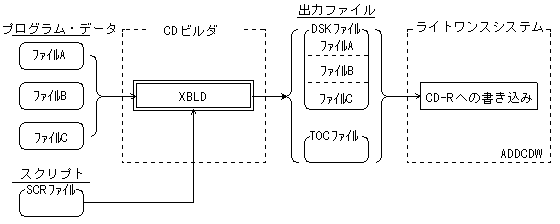
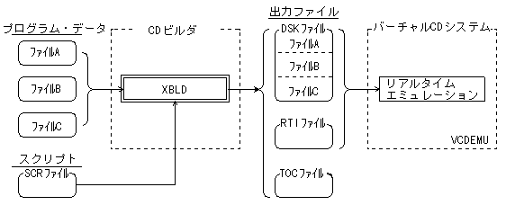
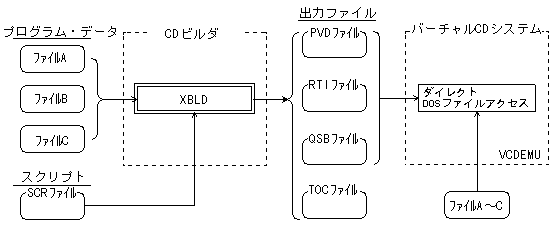
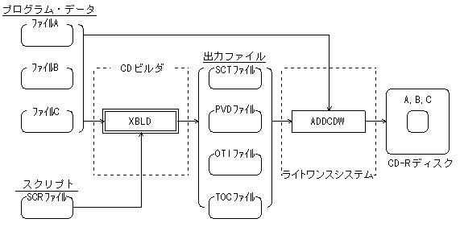

★PROGRAMMER'S GUIDE
★XBLDユーザーズマニュアル
★PROGRAMMER'S GUIDE
★XBLDユーザーズマニュアル
XBLDは、CD-Rディスクへの書き込みや、CDエミュレーションを行うために必要なファイルを出力する機能を備えます。以下にXBLDの機能を示します。
r、p、otiサブコマンドを指定しないときの動作モードです。
DSKファイルはVCDBUILDと同等のものを出力するので、ライトワンスシステムとしてADDCDW、SEGACDWのどちらでも使うことができます。
XBLDはどの動作モードにおいてもTOCファイルを出力します。
（VCDMKTOCを使いTOCファイルを作成する作業は不要）
図3.1 CD作成用ディスクイメージの出力

リアルタイムエミュレーションを行うときは、XBLDの「rサブコマンド」を指定します。
VCDUTLによるCDイメージ部分更新機能もまた利用できます。
図3.2 リアルタイムエミュレーション用ファイルの出力

ダイレクトDOSファイルアクセスを行うときは、XBLDの「pサブコマンド」を指定します。
図3.3 ダイレクトDOSファイルアクセス用ファイルの出力

オンザフライ書き込みを行うときは、XBLDの「otiサブコマンド」を指定します。
図3.4 オンザフライ方式での書き込みイメージ

★PROGRAMMER'S GUIDE
★XBLDユーザーズマニュアル